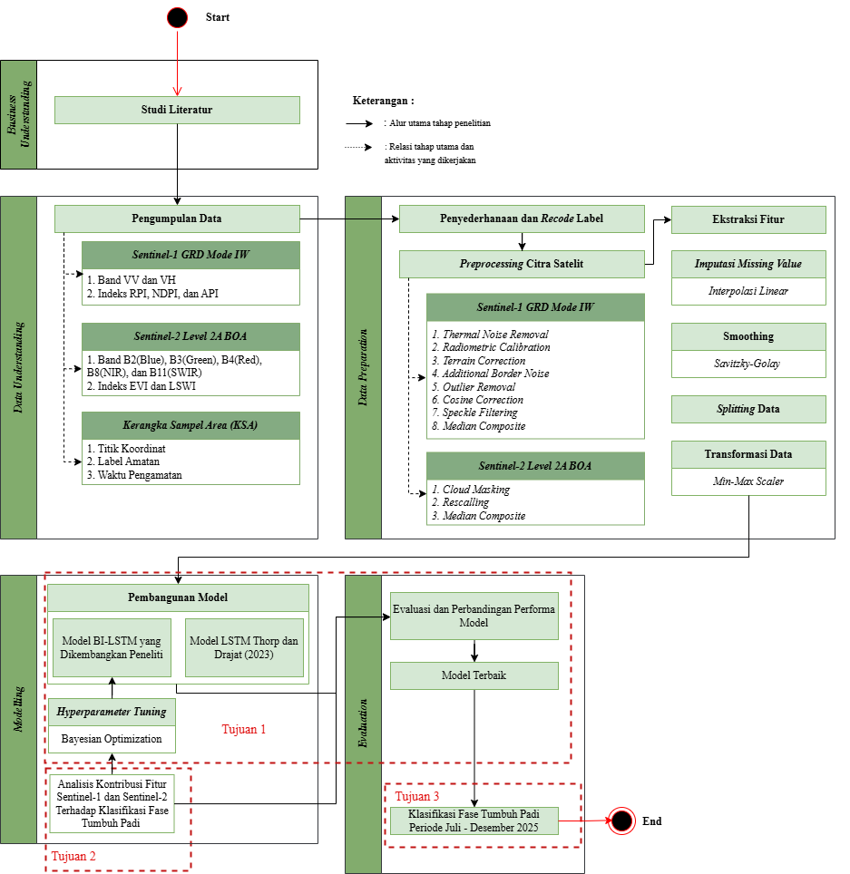
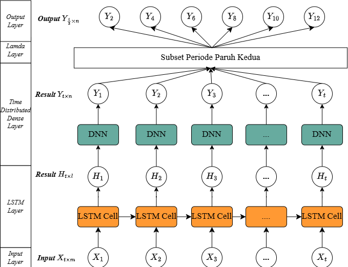
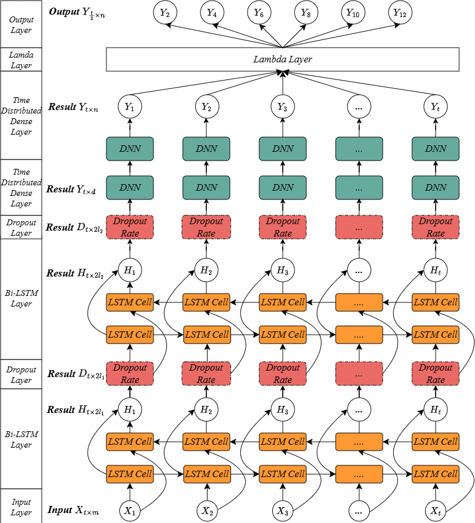

Studi Kasus: Karawang, Jawa Barat
Latar belakang
Padi merupakan salah satu komoditas pangan utama ketiga di dunia. Setiap fase pertumbuhannya memiliki karakteristik dan kebutuhan yang berbeda sehingga informasi mengenai fase tumbuh dapat membantu memahami kondisi pertanaman serta mendukung pemantauan area panen dan produksi padi.
Studi Kasus
1,041 juta ton
produksi padi pada 2024
57%
wilayah merupakan lahan sawah
Karawang menjadi wilayah strategis untuk pemantauan pertanaman padi di Jawa Barat.
Masalah dan Keterbatasan
KSA membutuhkan biaya operasional yang mahal dan waktu update yang lama, serta belum tersedianya peta spasial fase tumbuh padi secara kontinu hingga tingkat piksel.
Sentinel-1 dapat dipengaruhi speckle noise, sedangkan Sentinel-2 menghadapi tutupan awan. Penggunaan kedua sumber data memberikan informasi yang lebih beragam mengenai kondisi pertanaman.
Karakteristik fase tumbuh dapat memiliki kemiripan pada satu waktu. Informasi perubahan kondisi pertanaman dari waktu ke waktu penting dalam proses klasifikasi.
Tujuan Penelitian
Membangun dan mengevaluasi model Bidirectional Long Short-Term Memory (Bi-LSTM) menggunakan fusi data Sentinel-1 dan Sentinel-2 untuk klasifikasi fase tumbuh padi serta membandingkan kinerjanya dengan model LSTM Thorp dan Drajat (2021).
Menganalisis kontribusi relatif fitur Sentinel-1 dan Sentinel-2 terhadap klasifikasi fase tumbuh padi melalui sembilan skenario kombinasi fitur menggunakan model Bi-LSTM.
Menghasilkan peta spasial fase tumbuh padi di Kabupaten Karawang untuk periode Juli–Desember 2025 menggunakan model dengan kinerja terbaik.

Pemantauan fase tumbuh padi di Kabupaten Karawang membutuhkan informasi fase pertumbuhan yang dapat menggambarkan perubahan secara temporal dan distribusinya secara spasial. Oleh karena itu, penelitian ini mengembangkan model Bi-LSTM berbasis data Sentinel-1 dan Sentinel-2 untuk mengklasifikasikan fase tumbuh padi serta menghasilkan peta fase tumbuh pada tingkat piksel.
Keterbatasan informasi fase tumbuh yang dapat menggambarkan kondisi temporal dan spasial secara menyeluruh.
Mengklasifikasikan fase tumbuh padi dengan memanfaatkan informasi deret waktu.
Model klasifikasi dan peta fase tumbuh padi pada tingkat piksel.
Data yang digunakan dalam penelitian ini meliputi Sentinel-1, Sentinel-2, serta data KSA. Citra Sentinel-1 dan Sentinel-2 digunakan sebagai variabel prediktor sementara data KSA digunakan sebagai variabel target (ground truth).
| No | Variabel | Sumber Data |
|---|---|---|
| 1 | Polarisasi VH & VV | Citra Sentinel-1 (SAR) |
| 2 | Indeks RPI, NDPI, dan API | Citra Sentinel-1 (SAR) |
| 3 | Band B2(Blue), B3(Green), B4(Red), B8(NIR), B11(SWIR) | Citra Sentinel-2 (Optik) |
| 4 | Indeks NDVI dan EVI | Citra Sentinel-2 (Optik) |
| 5 | Titik Koordinat, Label Amatan, dan Waktu Pengamatan | Survei Kerangka Sampel Area (KSA) |
Dilakukan beberapa tahap preprocessing untuk mempersiapkan data citra Sentinel-1 dan Sentinel-2 agar siap digunakan dalam pelatihan model Bi-LSTM sebagai berikut:
Pada tahap ini dibangun dua arsitektur model, yaitu arsitektur LSTM Thorp dan Drajat (2021) sebagai model basline serta arsitektur Bi-LSTM yang dikembangkan oleh peneliti sebagai model usulan.


| Bi-LSTM units (L1) | [64—128] |
| Bi-LSTM units (L2) | [32—64] |
| Dropout rate | [0.2—0.5] |
| Batch size | [16, 32, 64] |
| Learning rate | [0.0001—0.01] |
| Optimizer | Adam |
| Max Epoch | 100 |
| Loss Function | Categorical Crossentropy |
| Activation (LSTM/Rec) | Tanh / Sigmoid |
| Activation (Dense/Out) | ReLU / Softmax |
| LSTM units | 750 |
| Batch size | 16 |
| Learning rate | 0.001 |
| Optimizer | RMSprop |
| Epoch | 20 |
| Loss Function | Categorical Crossentropy |
| Activation (LSTM/Rec) | Tanh / Sigmoid |
| Output Activation | Softmax |
| No | Nama Skenario | Jumlah Fitur | Daftar Fitur |
|---|---|---|---|
| 1 | S1 Band | 2 | [VV, VH] |
| 2 | S1 Indeks | 3 | [NDPI, RPI, API] |
| 3 | S1 Band Indeks | 5 | [VV, VH, NDPI, RPI, API] |
| 4 | S2 Band | 5 | [B2, B3, B4, B8, B11] |
| 5 | S2 Indeks | 2 | [EVI, LSWI] |
| 6 | S2 Band Indeks | 7 | [B2, B3, B4, B8, B11, EVI, LSWI] |
| 7 | S1 S2 Band | 7 | [VV, VH, B2, B3, B4, B8, B11] |
| 8 | S1 S2 Indeks | 5 | [NDPI, RPI, API, EVI, LSWI] |
| 9 | S1 S2 Band Indeks | 12 | [VV, VH, NDPI, RPI, API, B2, B3, B4, B8, B11, EVI, LSWI] |
Pengukuran performa model menggunakan lima metrik evaluasi, yaitu Precision, Recall , F1-Score, dan Koefisien Kappa.
| Kelas Fase | Precision | Recall | F1-Score |
|---|---|---|---|
| Vegetatif Awal | 87,50 | 82,03 | 84,68 |
| Vegetatif Akhir | 79,27 | 83,80 | 81,52 |
| Generatif | 90,55 | 86,46 | 88,45 |
| Panen | 85,59 | 87,07 | 86,32 |
| Persiapan Lahan | 82,91 | 83,21 | 83,06 |
| Bera | 74,85 | 81,53 | 78,05 |
| Accuracy | 84,20 | ||
| Macro Average | 83,46 | 84,02 | 83,68 |
| Model | Accuracy | Precision | Recall | F1-Score | Koefisien Kappa |
|---|---|---|---|---|---|
| Bi-LSTM Modifikasi (Penelitian Ini) | 84,20% | 83,46% | 83,02% | 83,68% | 0,8090 |
| LSTM Thorp dan Drajat (Hyperparameter Tuning Bi-LSTM) | 80,66% | 80,16% | 80,28% | 80,16% | 0,7661 |
| LSTM Thorp dan Drajat (Hyperparameter Asli) | 77,27% | 77,16% | 76,74% | 76,62% | 0,7249 |
| Skenario | Jumlah Fitur | Accuracy | Precision | Recall | F1-Score | Koefisien Kappa |
|---|---|---|---|---|---|---|
| S1 Band | 2 | 69,05 | 68,49 | 68,14 | 68,09 | 0,6264 |
| S1 Indeks | 3 | 67,75 | 67,03 | 66,71 | 66,70 | 0,6102 |
| S1 Band Indeks | 5 | 70,92 | 69,99 | 69,73 | 69,78 | 0,6482 |
| S2 Band | 5 | 84,20 | 83,79 | 83,31 | 83,50 | 0,8085 |
| S2 Indeks | 2 | 83,84 | 83,33 | 83,29 | 83,23 | 0,8044 |
| S2 Band Indeks | 7 | 84,78 | 84,11 | 84,32 | 84,19 | 0,8158 |
| S1 S2 Band | 7 | 83,62 | 82,80 | 83,27 | 82,98 | 0,8021 |
| S1 S2 Indeks | 5 | 82,68 | 82,30 | 81,56 | 81,78 | 0,7901 |
| S1 S2 Band Indeks | 12 | 84,20 | 83,46 | 84,02 | 83,68 | 0,8090 |
Visualisasi sebaran fase tumbuh padi periode Juli - Desember 2025 di Kabupaten Karawang
Model Bi-LSTM mencapai akurasi 84,20% dan lebih tinggi dibandingkan LSTM hasil tuning (80,66%) serta konfigurasi asli Thorp dan Drajat (2021) (77,27%). Fase generatif memiliki F1-score tertinggi (88,45%), sedangkan fase bera terendah (78,05%).
Sentinel-2 memberikan performa lebih tinggi dibandingkan Sentinel-1. Skenario terbaik adalah S2 Band Indeks dengan akurasi 84,78% dan F1-score 84,19%. Sementara itu, skenario S1 S2 Band Indeks menghasilkan akurasi 84,20% . Fitur yang paling berkontribusi adalah EVI, B11, dan B4, sedangkan penambahan fitur Sentinel-1 belum meningkatkan performa karena terdapat redundansi informasi.
Pemetaan fase tumbuh padi periode Juli–Desember 2025 menunjukkan distribusi fase yang tidak serempak serta transisi fenologi antarlokasi. Pemetaan menggunakan S1–S2 Band Indeks untuk menjaga ketersediaan informasi temporal saat tutupan awan Sentinel-2 tinggi pada November–Desember 2025. Hasil Ground truth menunjukkan kesesuaian pada beberapa titik, terutama fase generatif akhir, namun model masih mengalami kesulitan membedakan fase dengan karakteristik serupa serta perubahan kondisi lapangan yang berlangsung cepat.
Perluasan Periode Pelatihan: Sertakan data musim hujan (November–April) agar model terpapar kondisi tutupan awan tinggi selama pelatihan, meningkatkan kemampuan generalisasi sepanjang tahun.
Eksplorasi Arsitektur Lanjutan: Uji mekanisme self-attention atau Temporal Fusion Transformer (TFT) yang dirancang khusus untuk data deret waktu multivariat guna mengurangi misklasifikasi pada fase transisi.
Rancang skema validasi lapangan dengan titik-titik yang terdistribusi merata di seluruh Kabupaten Karawang untuk menghasilkan penilaian akurasi spasial yang lebih representatif.